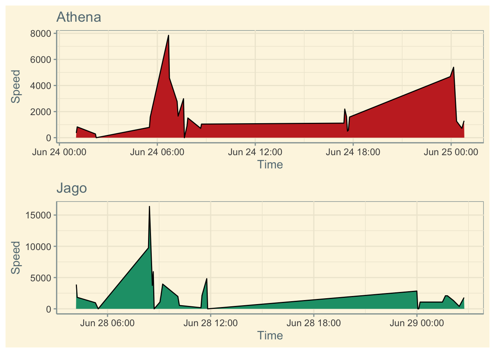
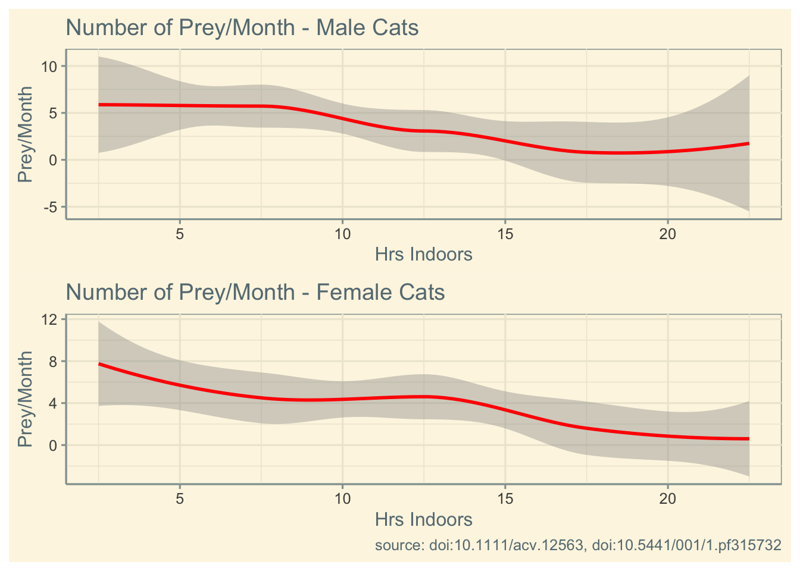

library(tidyverse)Pet Cats UK Data Visualization Report
Code, Libraries, Experimenting, etc.
library(ggthemes)install.packages("patchwork")Installing patchwork [1.1.2] ...
OK [linked cache]library(patchwork)tuesdata <- tidytuesdayR::tt_load('2023-01-31')
Downloading file 1 of 2: `cats_uk.csv`
Downloading file 2 of 2: `cats_uk_reference.csv`cats_uk <- readr::read_csv('https://raw.githubusercontent.com/rfordatascience/tidytuesday/master/data/2023/2023-01-31/cats_uk.csv')
cats_uk_reference <- readr::read_csv('https://raw.githubusercontent.com/rfordatascience/tidytuesday/master/data/2023/2023-01-31/cats_uk_reference.csv')cats_uk_reference# A tibble: 101 × 16
tag_id anima…¹ anima…² deploy_on_date deploy_off_date hunt prey_…³
<chr> <chr> <chr> <dttm> <dttm> <lgl> <dbl>
1 Tommy-… Tommy Felis … 2017-06-03 01:02:09 2017-06-10 02:10:52 TRUE 12.5
2 Athena Athena Felis … 2017-06-24 01:02:13 2017-06-30 23:59:32 TRUE 3
3 Ares Ares Felis … 2017-06-24 01:03:57 2017-06-30 23:58:01 NA 0
4 Lola Lola Felis … 2017-06-24 01:18:49 2017-06-30 09:04:40 TRUE 3
5 Maveri… Maveri… Felis … 2017-06-25 01:04:35 2017-07-03 09:10:07 TRUE 3
6 Coco Coco Felis … 2017-06-28 01:02:22 2017-07-05 06:50:04 TRUE 3
7 Charlie Charlie Felis … 2017-06-28 01:03:33 2017-07-04 07:08:31 TRUE 3
8 Jago Jago Felis … 2017-06-28 04:10:59 2017-07-04 02:50:05 TRUE 17.5
9 Morphe… Morphe… Felis … 2017-07-01 01:02:18 2017-07-09 06:39:05 TRUE 3
10 Nettle… Nettle Felis … 2017-07-01 01:05:50 2017-07-08 00:05:12 TRUE 7.5
# … with 91 more rows, 9 more variables: animal_reproductive_condition <chr>,
# animal_sex <chr>, hrs_indoors <dbl>, n_cats <dbl>, food_dry <lgl>,
# food_wet <lgl>, food_other <lgl>, study_site <chr>, age_years <dbl>, and
# abbreviated variable names ¹animal_id, ²animal_taxon, ³prey_p_monthcats_uk# A tibble: 18,215 × 11
tag_id event_id visible timestamp locat…¹ locat…² groun…³ heigh…⁴
<chr> <dbl> <lgl> <dttm> <dbl> <dbl> <dbl> <dbl>
1 Ares 3395610551 TRUE 2017-06-24 01:03:57 -5.11 50.2 684 155.
2 Ares 3395610552 TRUE 2017-06-24 01:11:20 -5.11 50.2 936 155.
3 Ares 3395610553 TRUE 2017-06-24 02:58:16 -5.11 50.2 2340 81.4
4 Ares 3395610554 TRUE 2017-06-24 03:01:26 -5.11 50.2 0 67.8
5 Ares 3395610555 TRUE 2017-06-24 03:51:58 -5.11 50.2 4896 118.
6 Ares 3395610556 TRUE 2017-06-24 03:55:03 -5.11 50.2 504 123.
7 Ares 3395610557 TRUE 2017-06-24 05:24:17 -5.11 50.2 108 27.1
8 Ares 3395610558 TRUE 2017-06-24 05:27:23 -5.11 50.2 504 36.3
9 Ares 3395610559 TRUE 2017-06-24 09:14:37 -5.11 50.2 252 67.4
10 Ares 3395610560 TRUE 2017-06-24 09:17:42 -5.11 50.2 4068 78.9
# … with 18,205 more rows, 3 more variables: algorithm_marked_outlier <lgl>,
# manually_marked_outlier <lgl>, study_name <chr>, and abbreviated variable
# names ¹location_long, ²location_lat, ³ground_speed, ⁴height_above_ellipsoidcats_uk |>
filter(tag_id == "Athena") |>
filter(timestamp < "2017-06-25") ->
athena_statscats_uk |>
filter(tag_id == "Jago") |>
filter(timestamp < "2017-06-29") ->
jago_statsggplot(athena_stats,
aes(x = timestamp, y = ground_speed, fill = tag_id))+
geom_area(color = "black", show.legend = FALSE)+
scale_fill_wsj()+
labs(y = "Speed",
x = "Time",
title = "Athena")+
guides(
tag_id = "none"
)+
theme_solarized() -> athena_plotggplot(jago_stats,
aes(x = timestamp, y = ground_speed, fill = tag_id))+
geom_area(color = "black", show.legend = FALSE)+
scale_fill_brewer(palette = "Dark2")+
labs(y = "Speed",
x = "Time",
title = "Jago")+
guides(
tag_id = "none"
)+
theme_solarized() -> jago_plotathena_plot / jago_plot
cats_uk_reference |>
filter(
animal_sex == "m"
) -> male_catscats_uk_reference |>
filter(
animal_sex == "f"
) -> female_catsggplot(male_cats, aes(x = hrs_indoors, y = prey_p_month))+
geom_smooth(color = "red", show.legend = FALSE)+
labs(
title = "Number of Prey/Month - Male Cats",
x = "Hrs Indoors",
y = "Prey/Month"
)+
theme_solarized() -> male_plotggplot(female_cats, aes(x = hrs_indoors, y = prey_p_month))+
geom_smooth(color = "red", show.legend = FALSE)+
labs(
title = "Number of Prey/Month - Female Cats",
x = "Hrs Indoors",
y = "Prey/Month"
)+
theme_solarized() -> female_plotFinal Plot
male_plot / female_plot +
labs(
caption = "source: doi:10.1111/acv.12563, doi:10.5441/001/1.pf315732"
)
Report
The data I am plotting comes from the tidytuesday data and is the Pet Cats UK data. Specifically, I created two visualizations: the number of prey/month compared to the number of hours spent indoors for both male and female cats. Originally, I wanted to create two plots that compared the ground speeds of two different cats over a day. I was able to successfully create those plots, as seen above, however when reviewing the data, the ground speeds are reported in m/s, which makes the data captured erroneous, or the units erroneous. Because of this, I decided to switch to the number of prey/month plots
I didn’t sketch out ideas for the plots before hand, but I knew that I wanted them to be easy to read, and for the data to appear continuous (as opposed to a point plot). Originally, I experimented with using geom_area, but this gave me plots that were jagged and not as easy to read (such as the speed plots). I then decided to use geom_smooth as this created an easy to read and understand visualization of the data that was also continuous.
Fixing the labels were relatively straightforward. I knew I wanted the x and y axes to say “Hrs Indoors” and “Prey/Month” as opposed to “hrs_indoors” and “prey_p_month”, as the former are much more aesthetically pleasing and easier to read. As I was only creating two plots with one line plotted on each, I knew that I did not need the legend, so I got rid of it with show.legend = FALSE and instead differentiated the two plots with their titles. For the theme, I wanted something that was simple but also nice to look at. Initially, I wanted to use theme_wsj, however I could not figure out a way to get all of the labels to appear correctly with that theme. I then experimented with theme_economist, however I ultimately settled on theme_solarized, as I felt the red line on top of the beige background was the best mix of simple and pleasing.
Finally, since I had created two plots, I knew that I needed to use patchwork to orientate them into the same figure. I initially tried to use them side-by-side, however the plots became too compressed and difficult to read in that orientation, so I instead stacked them. I then used the labs function to create a caption that cited the two sources the data package requested that everyone cites when using this data set.
While I am pleased with the outcome, the plot(s) could certainly be improved. One way the plot falls short of my ultimate vision is with the labeling of the y-axis. The two plots have different ranges of their y-axis, and while this does not ruin the plots as they are still understandable, it does make them slightly harder to understand at an initial glance.